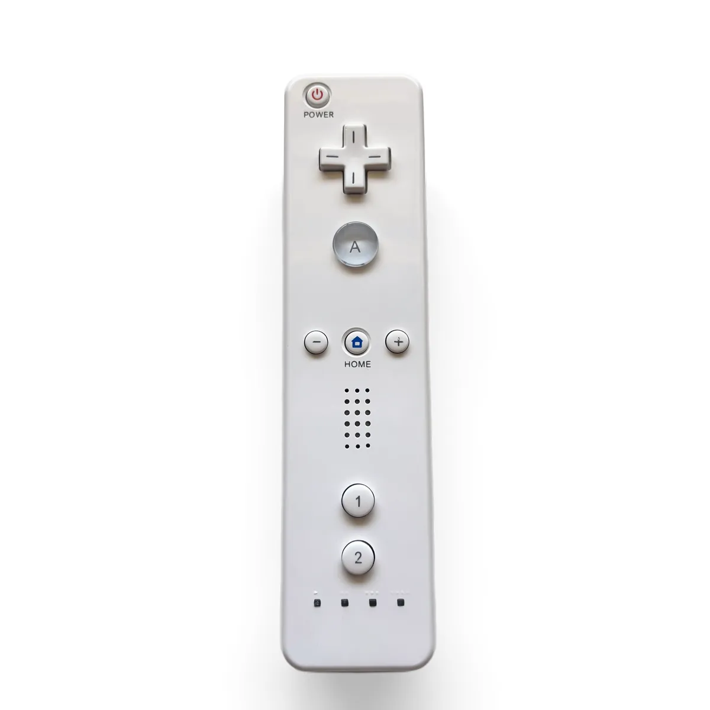
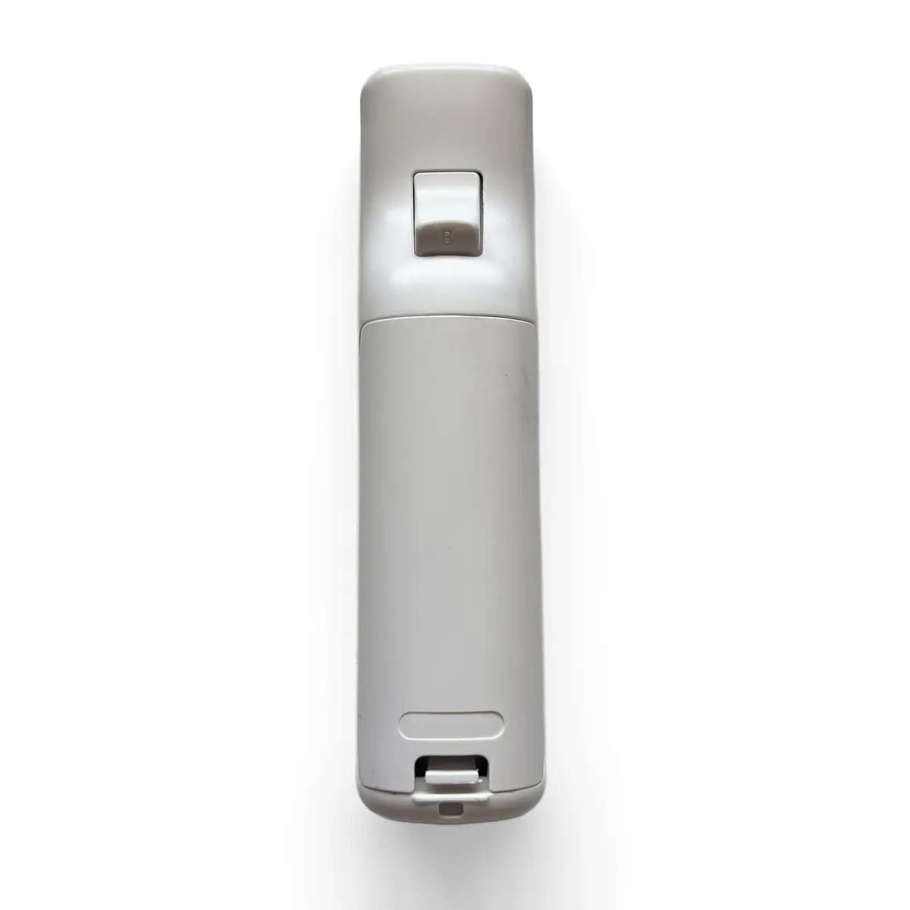
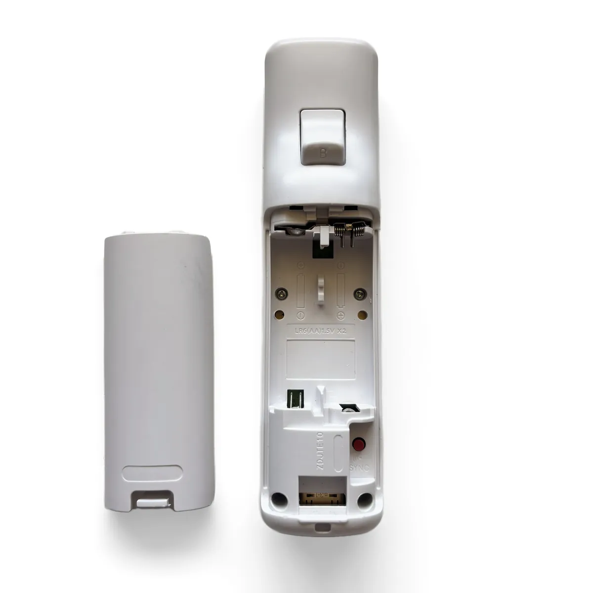

Step1
Remove the Battery Cover



- Remove the wrist strap and any silicone jacket from the Wii Remote.
- Flip the remote over so the B trigger faces up.
- Press the tab at the bottom of the battery cover and slide it off.
- Take out both AA batteries. The OpenMote runs on its own rechargeable cell, so you won’t need them again.